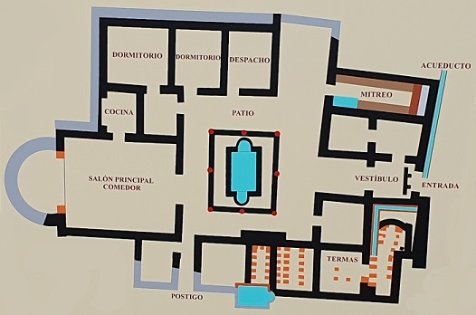

|
VILLA ROMANA DE MITRA En Cabra localizamos la
villa del Mitra data del siglo II. Antigua mansio romana ubicada en
la localidad de Cabra, en lo que fue la antigua Igabrum romana, muy
cerca del manantial Fuente de las Piedras.. Su nombre proviene del
descubrimiento de la escultura de Mitra. Los orígenes de Cabra
provienen de un oppidum turdetano, denominado Licabrum, donde
actualmente se encuentra el barrio de La Villa, para posteriormente
ser romanizada como Igabrum y ampliarse hacia el barrio de El Cerro.
 La villa cuenta con numerosas habitaciones distribuidas en torno a un gran patio en cuyo centro hay un estanque rectangular. Sus paredes de las estancias estaban recubiertas de estucos de diversos colores, y en algunas había revestimientos de placas de mármol. Algunos de los suelos estaban cubiertos con mosaicos decorados con motivos geométricos o figurativos.En el lado norte estaba el espacio termal, con varias habitaciones dedicadas al baño, algunas calentadas por debajo del suelo por el aire caliente que proporcionaban unos hornos de leña; tenían bañeras de agua fría y caliente. Destaca la estancia dedicada a salón principal y triclinium, rematada por un espacio semicircular y con un mosaico cuyo centro representa una escena mitológica: el triunfo del dios Baco.En el lado suroeste de esta residencia se encuentra el mitreo: una estancia dedicada al culto del dios Mitra. Es un espacio rectangular, con un pequeño depósito de agua en su entrada y dos asientos corridos en sus lados mayores que dejan un estrecho pasillo central; probablemente estuvo cubierto por una bóveda. Al fondo está la cimentación de un altar y de la hornacina que albergaba la figura del dios Mithras Tauroktonos. La presencia de numerosos trozos de huesos de animales en el pasillo pone de manifiesto la realización de banquetes rituales, como parte de los ritos mitraicos que se realizaban en este lugar. La escultura del dios Mitra fue hallada de modo casual en torno al año 1951-52. Se encontraba junto al borde del estanque del patio, debajo de los escombros del edificio, que por algún motivo desconocido se derrumbo en el siglo V.
|